Wpisz numer działki – dostajesz plan: gdzie zatrzymać wodę, co zrobić na polu i czy podlewać. Z publicznych danych, w przeglądarce i na telefonie.
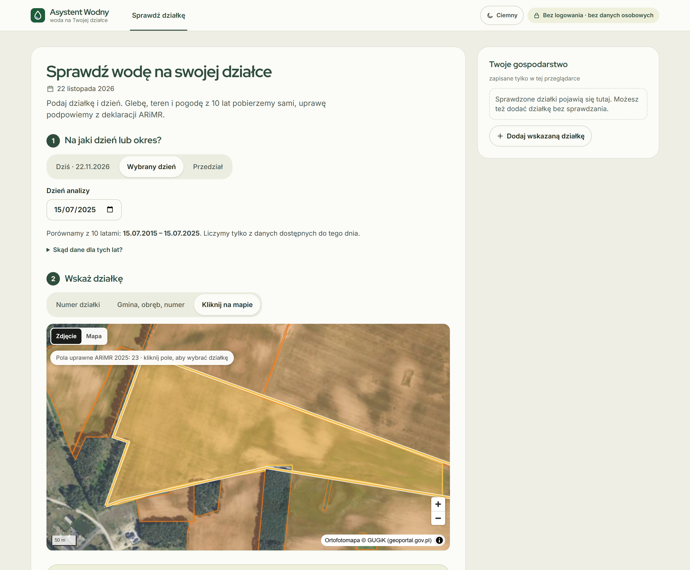
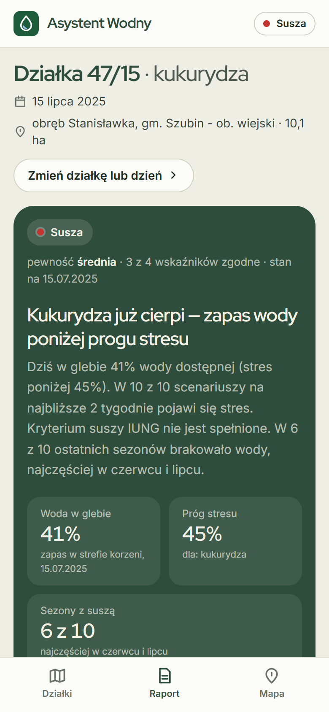
z wypisu z rejestru gruntów lub Geoportalu
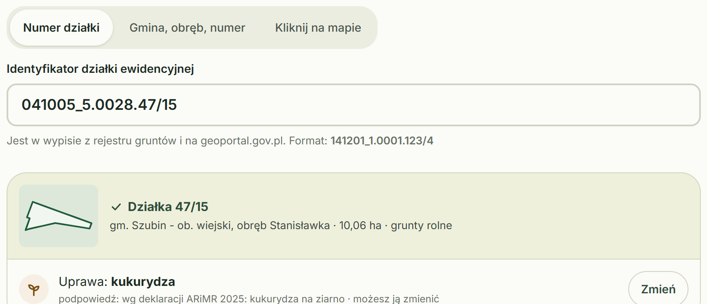
bez znajomości identyfikatora TERYT
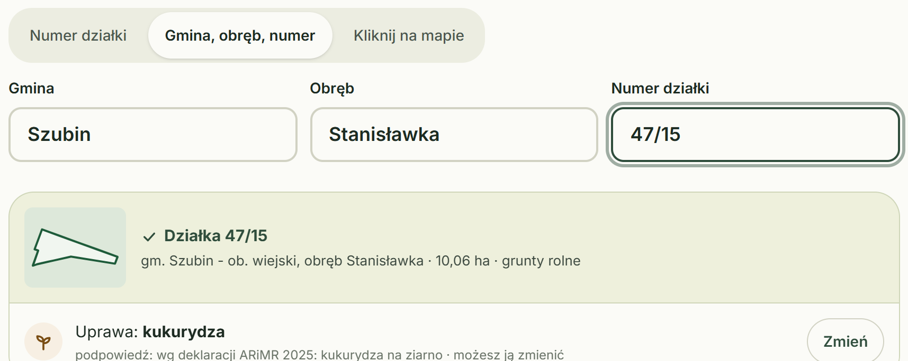
zdjęcie lotnicze z polami z deklaracji ARiMR
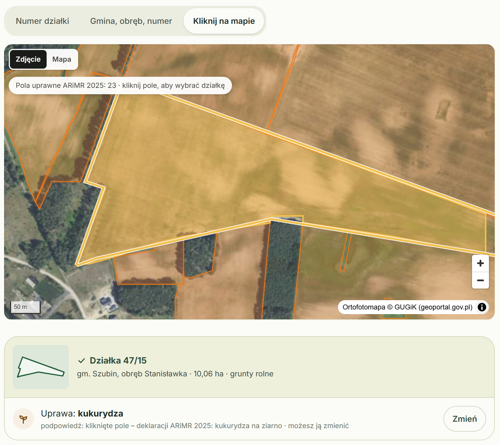
Granica i położenie z ULDK (GUGiK) · uprawę podpowiadamy z deklaracji ARiMR, rolnik może ją zmienić · bez logowania i danych osobowych
2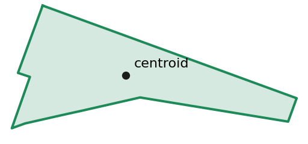
geometria, gmina, obręb
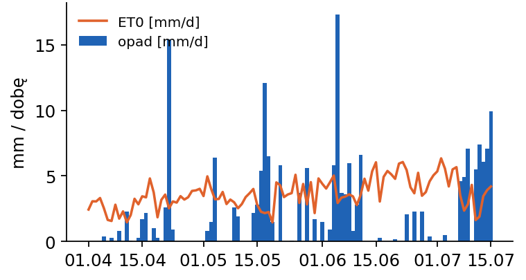
opad i parowanie ET0 dzień po dniu
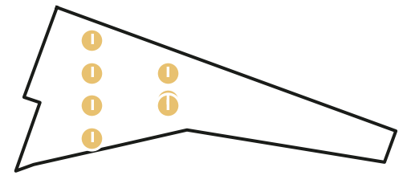
kategoria I–V i progi suszy rolniczej
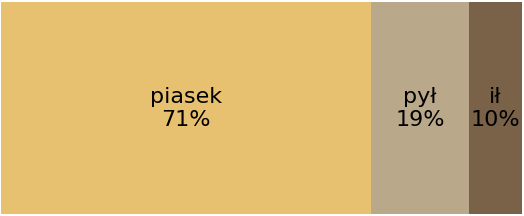
piasek, ił, węgiel → ile wody trzyma gleba
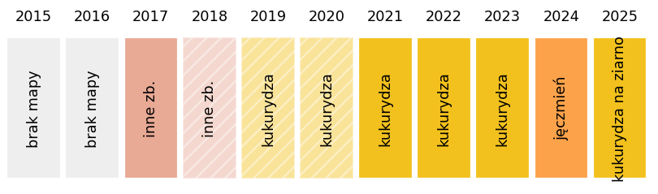
co rosło w każdym z 10 lat
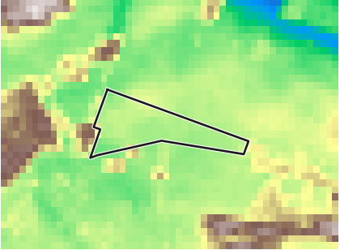
spadki, spływ, zagłębienia
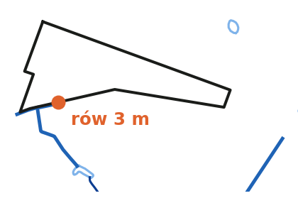
rów 3 m od granicy
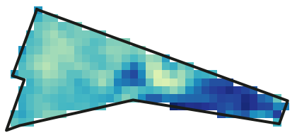
woda w liściach, tło suszy w Europie
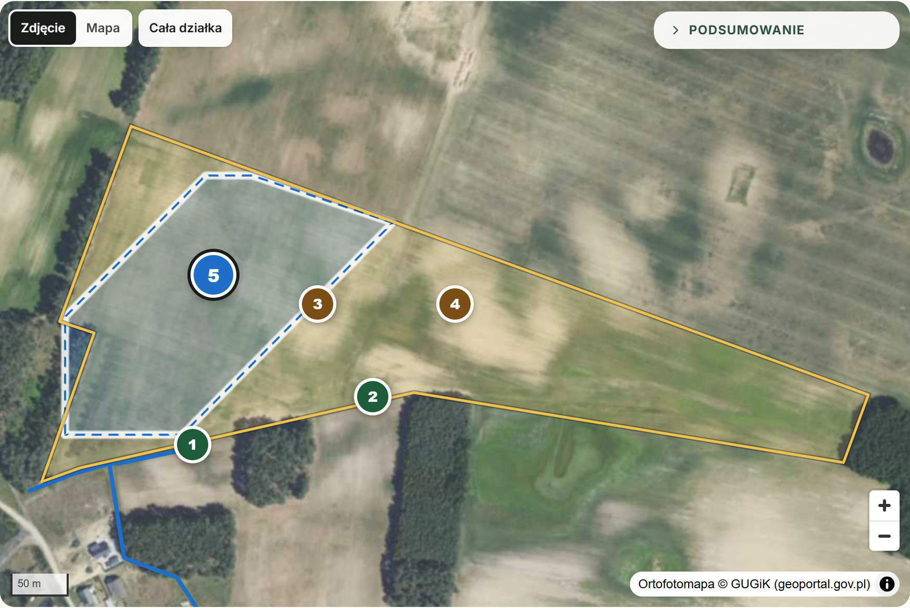
Każde zalecenie ma numer i miejsce na działce.
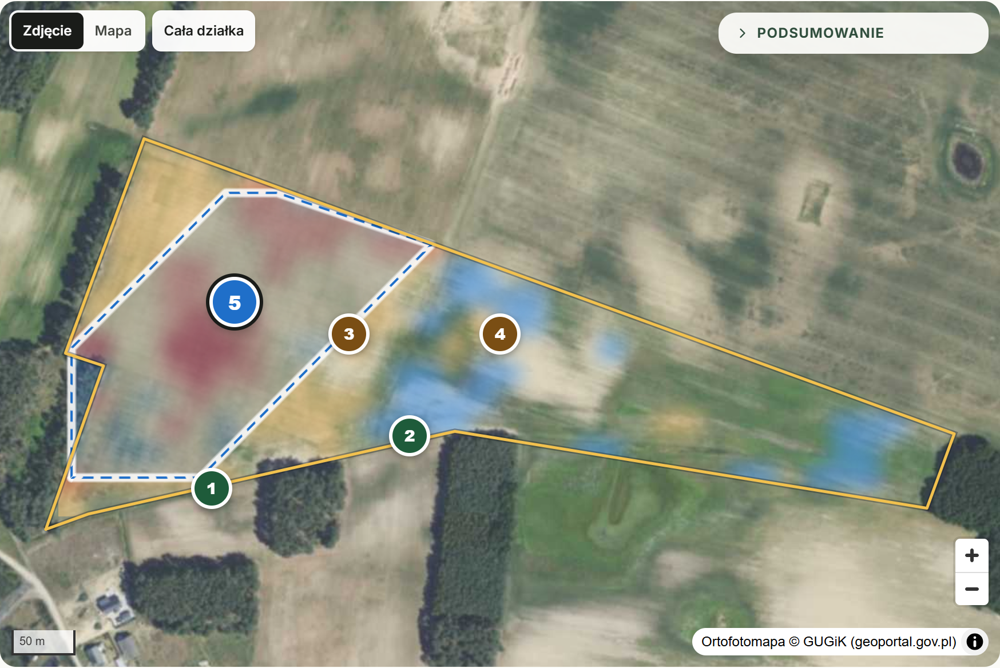
NDMI z Sentinel‑2 względem lat, gdy rosła kukurydza.
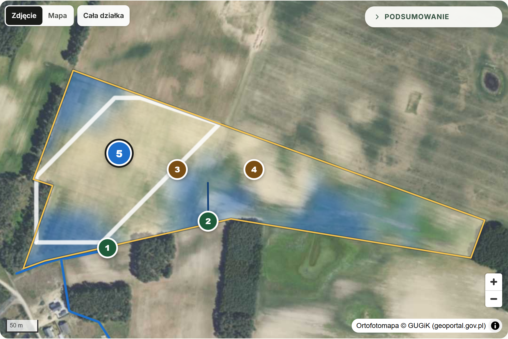
Skąd i dokąd spływa woda, gdzie stoi rów.
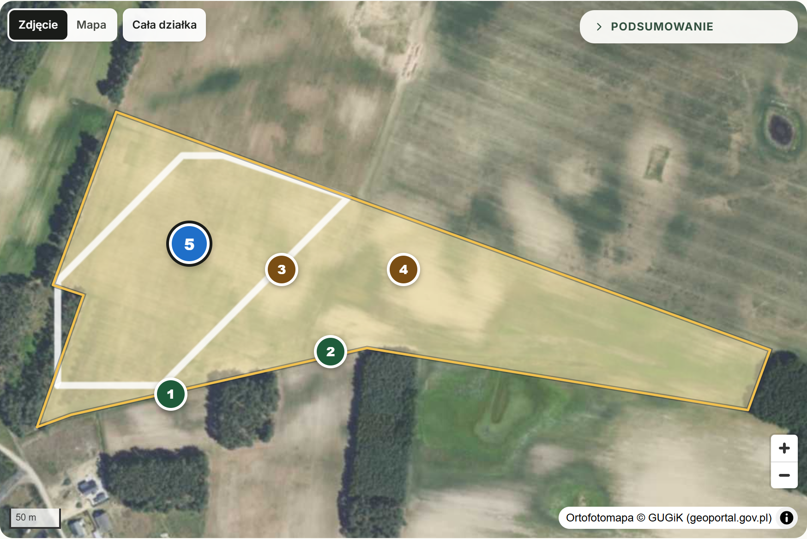
Ile wody utrzyma gleba w strefie korzeni.
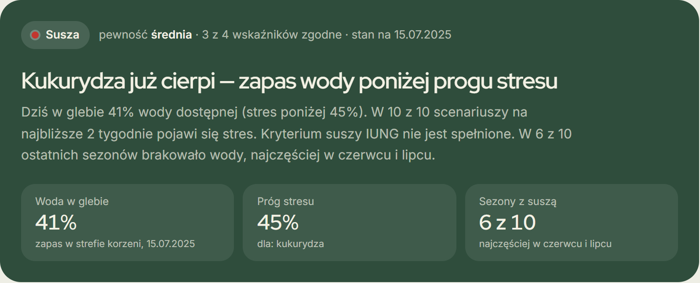
bo rów biegnie 3 m od działki, a susza była w 6 z 10 sezonów
bo 53% działki odpływa jednym miejscem na granicy
bo to piaski, gleba kat. I – woda szybko ucieka
bo kukurydza przekraczała próg suszy w 6 z 10 sezonów
zapas 41% przy progu 45% · stres w 2 tyg.: 10/10 → 6/10 scenariuszy
rów ≤ 100 m od granicy i susza teraz lub często
gdzie: najbliższy punkt rowu
zagłębienie ≥ 100 m³, min. 30% na działce
gdzie: środek zagłębienia z modelu terenu
spadek > 3% lub > 10% deszczu z ulew spływa
gdzie: komórka granicy z największym spływem
gleba organiczna na ≥ 30% działki
gdzie: część z glebą organiczną
lekka gleba, ryzyko ≥ 30% lub węgiel < 1,5%
gdzie: cała działka, po zbiorze
średni spadek > 5%
gdzie: strefy o spadku > 3%
susza w ≥ 6 z 10 sezonów dla obecnej uprawy
te same 10 sezonów, inny próg IUNG
zapas < próg stresu, brak > 10 mm mimo prognozy, okno wrażliwe
gdzie: najsuchsza strefa z satelity
dziś nie trzeba, ale ryzyko w scenariuszach ≥ 30%
ile: mm i m³ na sezon z 10 lat
Gdy reguła nie przejdzie, a podlewanie byłoby stratą, raport mówi wprost: „Nie podlewaj teraz”. Progi to wartości startowe do kalibracji z ekspertami.
6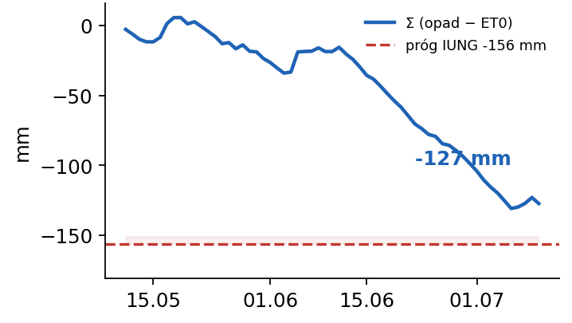
Klimatyczny bilans wodny z 61 dni porównany z progiem IUNG dla kukurydzy na glebie kat. I: −127 mm przy progu −156 mm.
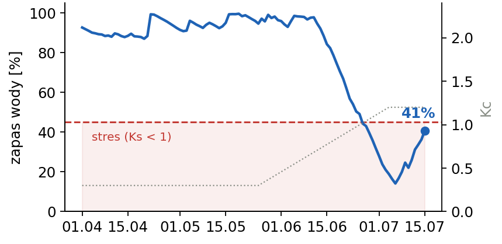
Bilans FAO‑56: opad, parowanie, faza uprawy i pojemność gleby. Zapas 41% przy progu stresu 45% – kukurydza już cierpi.
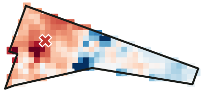
Odchylenie NDMI liczone tylko względem 2021–2023, gdy rosła kukurydza – inaczej mierzylibyśmy różnicę roślin, nie suszę. Wynik: 2,3 ha najsuchszej strefy.
Historię 10 sezonów liczymy dla uprawy, która rosła w danym roku (ARiMR, Copernicus) · spływ D8 i zagłębienia na modelu terenu · brak danych = jawny komunikat, nie zgadywanie
7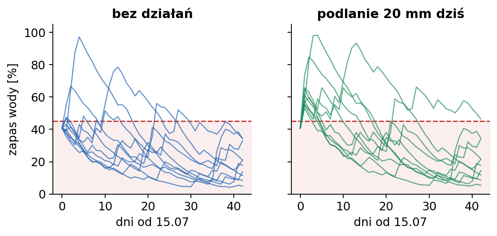
Od dzisiejszego stanu gleby puszczamy pogodę z tych samych tygodni lat 2015–2024. Każde działanie liczymy w tych samych scenariuszach – widać, ile naprawdę zmienia.
Stres w 2 tygodnie: 10/10 → 6/10 scenariuszy.
Sygnały się rozjeżdżają, więc raport podaje pewność średnią, a nie udaje precyzji.
Każdy krok obliczeń odtworzony w notebooku i porównany z wynikiem API.
Progi reguł z ekspertami IUNG i KOWR, test na suchych latach 2018–2019 i plonach referencyjnych.
NMT 1 m z Geoportalu dla każdej działki: oczka i wypływy w skali metrów, nie 30 m.
Wiele działek naraz, cotygodniowe sprawdzenie w sezonie i powiadomienie, gdy trzeba podlać.
Raport dla doradców ODR i spółek wodnych; wspólne zgłoszenie zastawek dla całej zlewni.
Pokażemy na żywo dowolną działkę i datę, którą wskażecie.